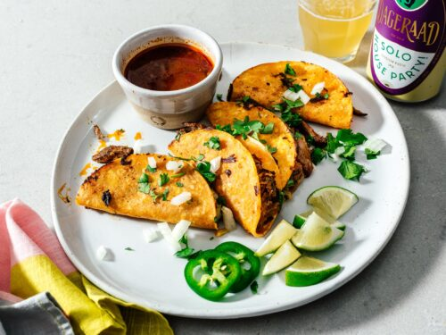

Tacos

Description
Traditional Mexican beef tacos are made with marinated sliced or shredded beef on soft corn tortillas. Those are great! But, that’s not what most Americans think of when we think of classic tacos.
Ingredients
- Ground Beef
- Corn Tortillas
- Cheese
- Tomato Sauce
Steps
- Cook the ground beef, cook it up until it’s completely browned. Drain the grease. Then when we return to the heat to the stove lower
the heat, add the homemade taco seasoning and a small amount of tomato sauce.
- Allow the taco meat to simmer briefly in the sauce to give more flavor.
- Fry the corn tortillas in a small amount of oil in a medium size skillet. Once fried on both sides, remove the tortillas and fold in half to form their shape.
- Fill the taco shells with the cooked beef and any toppings desired.